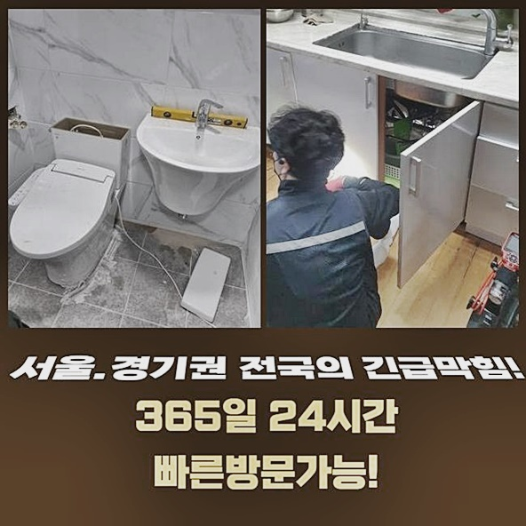
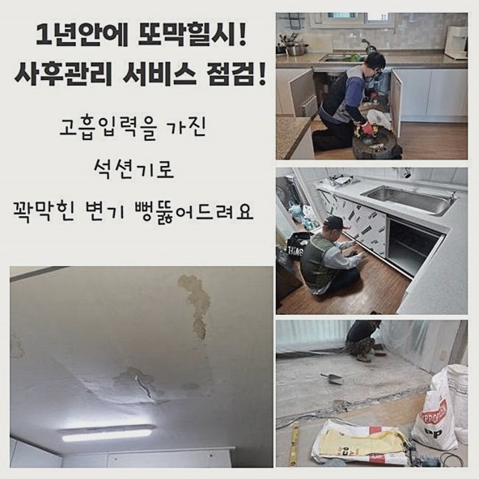
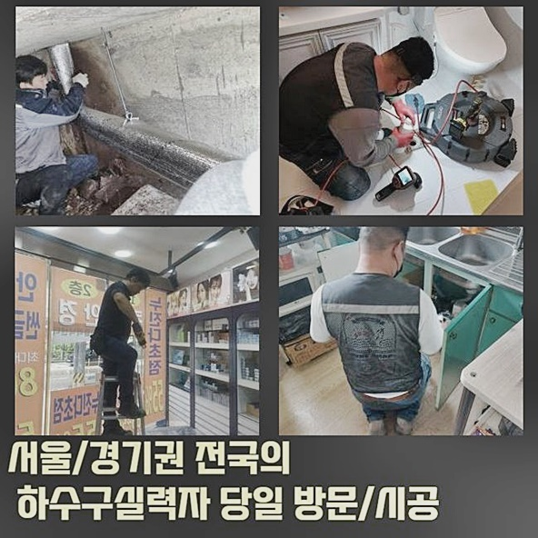
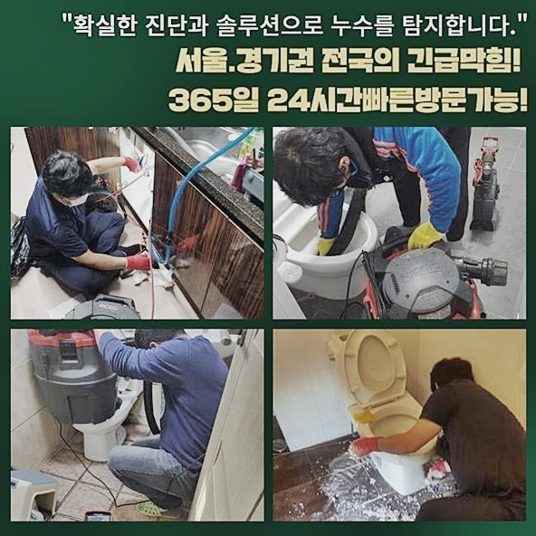
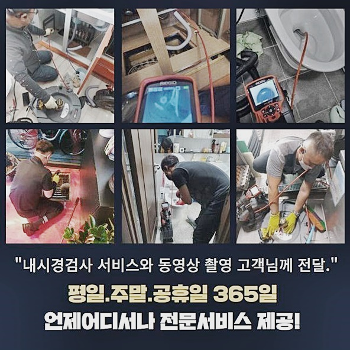

🏠 부천 원종동욕실역류 오정동 하수구청소장비 설비공사
용인 싱크대막힘 전문 시공 후기

📋 작업 개요
- 위치: 용인
- 서비스 유형: 싱크대막힘, 하수구막힘, 배관막힘, 누수수리, 역류해결, 뚫는업체, 배관청소, 설비공사
- 작업 일시: 2024. 8. 18. 17:25
- 업체명: 하수구수사대 (010-5615-2118)
🔍 문제 상황
부천 원종동욕실역류 오정동 하수구청소장비 설비공사
싱크대하수관로에서 막힘증세들이 생기게된다면 싱크대의 배수관을 넘어 다른곳에 설치된 하수라인도 위생에 있어서 좋지못한 영향을 끼치는데요
더불어 물빠짐 사고가 생기게됐는데 방치한다면 바닥으로 새어나올 가능성이 있고 아래세대에도 누수증상이 번질 수 있답니다
해결하기 힘든 사안이 아닐거라고 단정짓는다면 결함이 심해졌을때 중한 피해가 불거지고 추후에 일차원적인 방법을 시도할지라도 괄목할만한 개선이 안되죠
배수장애가 생겼을때 불상사가 발생되지 않게 하려면 무슨 방법을 통해 개선시켜야하는지 현장모습을 보며 알아볼게요
각 라인에 증상들이 발생된 현장에서 불편사항이 접수되고서 저희전문진은 신속한 방문드렸습니다
문제들이 발생된지 하루가 경과했었고 왜 그런지 질문하니 의뢰인분은 무거운것이 아닌것으로 여기시는 바람에 상담이 점점 밀렸다고 하셨습니다
하지만 시간이흐르면서 증상들이 불거져서 전화를 하셨던 것이였습니다
왜 그런것인지 면밀하게 알아보기위하여 배수관을 살피니 관로에서 하수가 솟아오르는 결함이 관찰되었는데요
이 상태는 간소한 증상이 아니라 심화된 증상이라는 것을 의미하는 시그널입니다
곧이어 내시경장비를 관로로 삽입한 뒤 체크해보니 입구에서부터 엉망인것을 오차없이 알 수 있었습니다

🔎 원인 분석
💡 전문가 진단: 정밀 진단 장비를 사용하여 슬러지의 고착 여부를 판명하고 타격/세척 작업을 실시했습니다.
증세를 없애도록 내시경장비를 빼내고 석션기기를 운용시켜 오수들을 없애주는 청소를 실시했습니다
이러한 작업들을 수행하는 시기에 석션장비의 앞코를 힘을 주어 압박한 다음 잔해물이 흡입되도록 잡고있는게 이물청소에 도움이 됩니다
석션장치를 단순하게 사용하는걸론 완벽하게 개선이 안되기에 압박한 뒤 빨아들였습니다
간단한 사안일땐 스프링장치를 투입시켜 막혀버린 곳을 뚫어내는 경우도 있으나 해당 현장에서는 오염물을 온전하게 제거시키는 것이 이 단계 다음엔 문제들을 최소화하는데 큰 역할을 하므로 흡입하는 방법을 택한것이죠
지속적으로 오염원을 빼내고 다시 내시경기기를 투입시켜 심층부까지 살펴보았습니다
사이즈가 큰것은 대다수 없어졌으나 현재 하수관로의 내측은 심각하게 막혀버린 모습이였죠
막히게 된 지점을 해결할 목적으로 맨땅의 헤딩 식인 석션기기의 운용은 궁극적으로 해결되지 못한다 결론을 지었습니다
그 다음으로에 스케일링을 위한 샤프트장비 운용을 수행하는것으로 정했어요
바로 기기를 선정하여 수행해줄 작업에관해 고객분에게 정확히 안내했어요
배수 장애에 있어서 여러분들도 수리의 척도를 이해하고 있는게 중요하기때문에 오차없는 내용전달로 이해 가능토록하고 결함을 확실히 시정해주고자 노력했는데요
하수 시스템 오류는 갑자기 야기되지만 이에 꼭맞는 대처가 결여되면 시간낭비와 예상치못한 작업비를 감수할 수 밖에 없는걸 기억해주세요

🔧 작업 과정
현 시점에 설명과정을 거치니 의뢰인분은 신속한 청소를 바라신 까닭에 신속히 준비했어요
이용될 장치는 샤프트장치와 진단에 사용됐던 내시경장비로 누적된 잔해물을 타격해 컨디션 복구를 해보았어요
이 단계 다음엔 스케일링 기계를 배수라인으로 삽입하여 내시경장치까지 사용해 누적된 잔해물을 청소해주는 작업들을 진행시켰는데요
외부에서 확인할 수 없는 하수관로를 체크하며 수리를 진행시켜야 배수관에 누적된 오염원을 확실히 사라지게끔 할 수 있죠
신속한 이처럼 시공을 이행해줄 때에는 내시경을 통해 의뢰인분도 확인가능하므로 신뢰있는 작업들을 온전히 느끼실 수가 있습니다
꾸준히 아래 쌓인 잔해물을 청소해주면 관로의 깊은 지점엔 잔해물이 퇴적되는데 석션을 가용해 빨아당깁니다
배수장애를 발발케하는 잔재들을 없애고 내시경장비로 심부까지 검수하는데 전체적으로 온전하게 탈바꿈한 배수관을 고객과 확인했어요
이처럼 저희의 경우 작업된 배수관을 고객과 함께 확인하죠
잔해가 많은 상황에서 하수관이 증세가되는 사태를 해결해주지 않으면 역류증상이 생김과 동시에 해당 상황에서 악취가 발발하니 이를 참고하시어 과정들을 실시하길 추천드려요
또다시 타 공간에 배수관에 문제들이 발생되어 방문드렸는데 당도해서 하수관로가 어떠한 모습인지 내시경기기로 조속히 둘러보았어요
체크해보니 깊은 지점까지 기름때가 뒤엉켜 축적되면서 이물이 연결부에 붙어버림과 동시에 굳어진것을 목격했습니다
곧이어 바로 청소를 준비했죠
첫번째로 간소하게 시정해줄 수 있는 사안인지 확인해주기위해서 장판으로 라인에 석션을 넣어서 강하게 흡입하는 시공을 진행시켰죠
신속한 수리를 꾸준히 속행해주고 컨디션을 관찰하니 아래에 잔해물이 온전히 사라지지않은것을 알았죠
곧이어 놓친 부분을 타겟으로 해 작업들을 진행시켰습니다
이용되는 것은 샤프트장치로 관로에 넣어준 다음 케이블 끝에 위치한 노커부분을 조속하게 회전을 시켜 오염원을 서둘러 걷어내는 작업들을 진행했습니다
조속하게 회전이 되며 오염물을 탈락시키고 석션장비로 떨어져나온 잔해를 즉각 빨아당겼죠


✅ 작업 완료
그 다음으로 내시경기기로 또 다른 문제들이 있진않은지 점검해보았습니다
최종단계로 배수관으로 하수를 붓고 배수테스트를 실시하니 문제없이 흐르는걸 목격했어요
서둘러 배수장애들을 고쳐야하는 시점에 곧장 저희배관 해결사들을 부르시면 통수관련한 해결들을 수행합니다
접수를 거쳐 불러주신 장소로 한시간내 방문드리고 있으므로 우려할 일이 없으십니다
최종단계로 편한 스케줄의 날짜가 있으실 때도 지정가능하니 해당 사항도 참고 부탁드립니다!


⚠️ 베란다 누수 및 방수 관리 방법
- ✅ 비가 많이 올 때 창틀 주변이나 아래층 천장에 얼룩이 생기는지 정기적으로 확인해 보세요.
- ✅ 우수관 주변 실리콘 마감이 들뜨거나 깨진 틈새가 있는지 손상 여부를 수시로 체크하세요.
- ✅ 베란다 바닥 타일의 줄눈(메지)이 소실되면 그 틈으로 물이 침투하여 누수가 유발됩니다.
- ✅ 누수 의심 증상 발견 시 방치하면 아래층 손실이 커지므로 즉시 전문가의 진단을 받으십시오.
💡 핵심 정리
- 확실한 장비 작업(내시경 점검 및 샤프트 스케일링)으로 원인을 뿌리 뽑습니다.
- 작업 후 1년 이내에 동일한 부위 재발 시 100% 무상 A/S 서비스를 보장합니다.
- 서울 · 경기 · 인천 전 지역에 24시간 언제든 긴급 출동할 수 있도록 항시 대기 중입니다.
❓ 자주 묻는 질문 (FAQ)
🚨 용인 싱크대막힘 문제로 고민이신가요?
정확한 원인 진단과 확실한 시공으로 재발 없는 해결을 약속드립니다.
24시간 긴급 출동 | 서울 · 경기 · 인천 전지역 | 1년 내 재발 시 무상 A/S